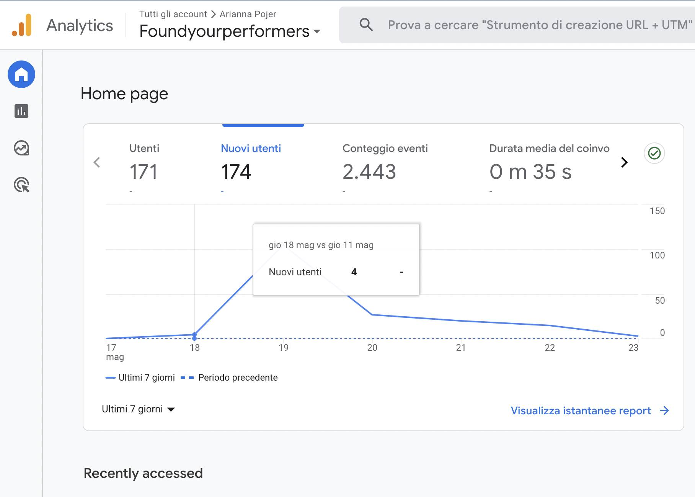

Abstract
Prima d’ora, non esisteva una piattaforma che coniugasse queste realtà musicali così diverse. Il sito nasce dalla volontà di raggruppare i musicisti in base al luogo di provenienza, per rendere più semplice e lineare la ricerca dell’utente. La divisione del Trentino in zone aiuterà gli organizzatori, che potranno scegliere il gruppo musicale in base alla vicinanza dell’evento. FyP sorge per velocizzare la ricerca di cori e band di qualità per persone del territorio.
Project Management Plan
Obiettivo: il sito si pone l’obiettivo di informare le persone sulle band e i cori presenti in Trentino. Vuole essere uno strumento per aiutare enti, associazioni e privati nella scelta della musica che fa al caso loro, per l'evento in fase di organizzazione.Target utente: il target utente si muove in un range di età tra i 18 e i 35 anni. Il target principale è sicuramente quello che va dai 25 ai 35 mentre il secondario va dai 18 ai 25.
Competitors: non esistono siti web che propongono simultaneamente cori e band del trentino e per questo ho analizzato due siti che hanno una funzione analoga: Italcori.it e Musiqua.it. Italcori è il portale dei cori associati Feniarco (federazione nazionale italiana associazioni regionali corali) mentre Musiqua è un sito web che si propone di trovare band e dj, in tutta Italia, per un evento. Entrambi sono a pagamento.
Struttura e layout
Architettura del sito: rappresentazione ad Albero
Wireframe:
Wireframe index:

Wireframe musica:
Wireframe contatti:

Wireframe Alpe Cimbra:
Wireframe Trento:

Wireframe Val di Cembra:

Wireframe Val di Fassa:
Wireframe Val di Fiemme:
Wireframe Val di Non:

Wireframe Val di Sole:
Wireframe Valsugana:
Wireframe documentazione:

Look and feel: I font utilizzati sono: Oswald per i paragrafi e i titoli principali mentre Bebas Neue per l’intero header. Per i titoli e gli h1,h2,h3 ecc..ho usato anche la funzione bold. La palette di colori utilizzata è: nero per i font, bianco, #B9A8F0 (lilla) per lo sfondo, #8a2be2 per i bottoni. Gli elementi principali del sito sono: menù, titolo e footer presenti in tutte le pagine; sono presenti poi delle card con foto, descrizione e bottoni, una funzione search e una tabella per la compilazione di dati.
Quasi tutte le immagini hanno, in basso a destra, il nome del sito in cui sono state scaricate; se non presente è perchè l'immagine proveniene da wikipedia e quindi è senza copyright. La foto prensente in index.html è invece stata scattata da me.
Linguaggi e strumenti:
Linguaggi: CSS, HTML, Javascript
Strumenti usati a supporto della progettazione: Bootstrap, fontawesome per le icone, google font, google analytics per la ricezione di dati, GitHub per la pubblicazione, adobe color per la ricerca dei colori e balsamiq per la creazione dei wireframe.
Communication Strategy
Background: Il sito Italcori.it è un portale per tutti i cori d'Italia. Il sito si porpone di classificare tutti i cori iscritti a Feniarco. Sul sito sono presenti immagini del coro, biografia e repertorio. Italcori.it è il sito di maggiore popolarità sui cori; è ben strutturato ed ha un'identità precisa, ma non sempre è coerente nelle informazioni. All'interno del sito infatti è il Direttore del coro che ha la responsabilità di modificare i dati del proprio organo; questo causa un'effetto di confusione: ad alcuni cori manca la foto, ad altri la biografia, ad altri ancora i contatti o il repertorio. Italcori.it non ha l'obiettivo, come Find your Performers, di aiutare le persone a scegliere il coro che fa al caso loro per un evento; si identifica invece come un'enciclopedia e un elenco di cori italiani associati a Feniarco. All'interno del sito sono presenti anche i concerti in programma, le pubblicazioni degli organi e una barra per la ricerca dei Direttori.Musiqua.it è una piattaforma che ha lo stesso obiettivo di FyP. La differenza principale sta nella zona di azione e nella gratuità. Il mio sito è infatti specifico per il trentino ed è gratuito mentre Musiqua.it è a pagamento (si può scegliere tra due abbonamenti) e riguarda l'intera Italia. Anche in questo caso sono le band a dover compilare ed aggiornare le informazioni sul sito. Il sito web è ben strutturato, ogni band e ogni dj ha la sua pagina e all’interno di essa sono presenti delle informazioni coerenti. Il sito è molto intuitivo e facile da utilizzare. Vi è anche una sezione che riguarda i prossimi eventi, è presente un blog e ci sono degli articoli informativi sul sito. A differenza del mio sito in Musiqua.it non sono presenti band di nicchia.
La differenza principale tra Find your performers e i due siti presi in analisi è il luogo di azione. FyP è un sito specifico per il Trentino e il suo punto di forza è la divisione della regione in zone; molto utile per gli organizzatori.
Obiettivi comunicativi: L’obiettivo principale di Find your performance è quello informare sulle band e dei cori disponibili in trentino per un evento. Per facilitare la ricerca, le band e i cori sono divisi in zone; spesso infatti si sceglie il gruppo in base alla vicinanza dell’evento. Il sito può anche essere utilizzato a scopo privato, per una festa di compleanno, una laurea o in generale una festa privata.
Find your Performers ha inoltre altri due obiettivi. In primo luogo può aiutare il target a scoprire nuovi gruppi presenti in zona, e, in secondo luogo può essere uno strumento che permette al target di risparmiare tempo nella ricerca. Conosco molte associazioni del territorio e quasi tutte, per scegliere il musicista adeguato si confrontano con tantissimi altri enti, non esiste un sito serio, veloce e affidabile.
La presenza, sulla piattaforma, dei link a video, social e contatti è un altro fattore che aiuterà il target a risparmiare tempo; non sarà più necessario aprire e chiudere il sito più volte per andare alla ricerca del profilo instagram o facebook del gruppo.
Gli obiettivi che mi sono prefissata sono: 100 views del sito e 10 like su twitter.
Target audience e messaggio: Il target del sito va dai 18 ai 35 anni; sono infatti i giovani che solitamente si vanno alla ricerca di nuove band o nuovi cori da portare all’interno di un evento. Per raggiungere il target principale (25-35anni) userò i messaggi whatsapp; mi assicurerò di inviare il sito del link a più persone possibili e anche a vari gruppi in cui sono presenti presidenti di proloco o di associazioni del luogo. Per raggiungere il target secondario (18-25 anni) userò sempre whatsapp e anche twitter.
Mi piacerebbe che il sito diventi un punto di riferimento per varie persone, l'obiettivo sarebbe infatti ingrandirlo sembre più, aggiungendo poi anche i dj trentini.
Faccio parte del consiglio della proloco del mio paese e so quanto sia difficile cercare un gruppo musicale adatto; al momento la ricerca si svolge ancora, per la maggiorparte delle associazioni, con il passaparola.
Il messaggio che il sito si propone di veicolare è quello di rendere visibile e pubblica la musica trentina; spesso non conosciuta al di fuori della zona di appartenenza.
Promozione: La promozione del mio sito si baserà principalmente su messaggi whatsapp. Ho intenzione di girare i messaggi a varie persone, anche a altre proloco o associazioni. Essendo anche io nel direttivo di una proloco ho contatti con diversi enti. Successivamente farò anche un post su twitter per pubblicizzare il sito. Se presenti metterò, fra i risultati, anche alcune recensioni sul sito.
Valutazione dei risultati
I risultati sono stati raggiunti e superati. Con twitter ho ottenuto 14 mi piace e 10 retweet totali; le visualizzazioni del sito sono invece 174.Twitter:

Google analytycs:

Recensioni da parte di alcuni membri della mia Proloco: